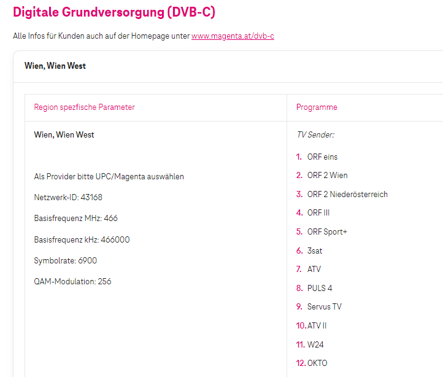

Guten Tag.
Überlege mir eine Satanlage zu installieren.
Bei UPC in WIEN gab es ohne TV Kabelfernseh Vertrag gewisse "Basis" TV Sender - ORF und ein paar andere in SD Qualität. So qwasi als Notprogramm des Zivilschutzverbandes bei einer Katastrophe etc.
Denke da eher aber auch wenn wirklich einmal das SAT Signal komplett weg ist das man dann zur NOT ohne viel Aufwand zumindest ORF via einfaches Antennenkabel intern an den TV empfangen kann.
Gibt es das bei MAGENTA auch noch ?
Frei empfangbare Sender wie anno dazumal über den Wandanschluss oder Antenne direkt am TV gibt es wohl nicht mehr.
Früher gab es bei Wohnhäusern eine Gemeinschaftsdachantenne die über einen Hauptverteiler in den Jeweiligen Wohneinheiten eingebracht wurden, und über diese man Analoge TV Sender empfangen konnte.
Seit der Digitalisierung ist dies nicht mehr möglich einfach eine Antenne anzubringen um TV schauen zu können.
Bei Magenta kann man zwar das TV-Gerät auch direkt per Wandantennenanschluss - ohne einer TV-Box - verbinden, aber dazu bedarf es einen TV-Vertrag.
Ohne Vertrag kein TV Genus!.
Stimmt so nicht.
Denn auch vor wenigen Jahren war UPC schon digital und da gab es das sehr wohl.
Und ich meine KEINE Gemeinschaftsanlage.
Werde mich aber noch woanders schlau machen und dann ggf hier berichten.
vor 20 Minuten schrieb ichbines:Stimmt so nicht.
Wenn es so nicht Stimmt, warum testest du nicht einfach den Anschluss selber?
Dann weist du ob es noch Möglich ist nur über den Wand- beziehungsweise Antennenanschluss alleine ohne Vertrag TV zu schauen!.
vor 24 Minuten schrieb ichbines:Denn auch vor wenigen Jahren war UPC schon digital und da gab es das sehr wohl.
UPC TV war vorerst auch nur rein über die Wandantenne - wie schon zuvor Telekabel Wien möglich.
Diese wandelten die Analogen TV-Signale ins Digitale um, damit man TV aus der "Dose" weiter schauen konnte.
Wenn dies noch möglich währe, könnte man auch noch Radio über den Wandanschluss konsumieren, was aber auch nicht mehr ohne Konverter geht.
Kurze Zeit später kamen dann schon die Ersten TV-Boxen von UPC.
Im übrigen wurde der Sender Kahlenberg eingestellt und abgebaut, wodurch ein TV über die Antenne wohl unmöglich wurde!.
Hallo @ichbines ,
ich denke, du sprichst hier von einer TV-Grundversorgung. Wenn das betroffene Haus an das Magenta Netz angeschlossen ist, so solltest du folgende TV Sender empfangen können (hier im Falle von Wien und Wien West)

Wenn dein Haus nicht am Magenta Netz hängt, so kannst du deine Hausverwaltung fragen, wie du die TV Grundversorgung empfangen kannst.
Liebe Grüße JD.
@Jonathan Dorian , bleibt die Frage ob es dazu einen Vertrag mit Magenta bedarf, oder diese TV-Grundversorgung auch ohne Vertrag möglich ist.
Sozusagen, das TV-Gerät einfach mit dem Wanddosenanschluss verbinden, und schauen!.
vor einer Stunde schrieb Jonathan Dorian:Hallo @ichbines ,
ich denke, du sprichst hier von einer TV-Grundversorgung. Wenn das betroffene Haus an das Magenta Netz angeschlossen ist, so solltest du folgende TV Sender empfangen können (hier im Falle von Wien und Wien West)
Wenn dein Haus nicht am Magenta Netz hängt, so kannst du deine Hausverwaltung fragen, wie du die TV Grundversorgung empfangen kannst.
Liebe Grüße JD.
Ja genau das habe ich gemeint. DANKE 🤞
GRUNDVERSORGUNG das ist das richtige Wort. Ist mir nicht eingefallen.
Und das kann praktisch jeder kostenfrei Empfangen ohne Magenta Vertrag ?
Natürlich nur wenn Kabelfernsehdose in der Wohnung und Wand ist was ja quasi in Wien eh überall so ist.
Darin ist nicht definiert, ob diese Sender (Grundversorgung) ohne Anmeldung frei nutzbar sind.
@Jonathan Dorian , wie sied es aus, sind diese nun ohne Magenta Anmeldung (Vertrag) nutzbar, oder doch nicht?.
Hier auch mal die Senderliste für Magenta Basic TV-S (DVB-C only).
Bearbeitet von Maverick
Glaub Magenta möchte das nicht zu sehr an die große Glocke hängen ;-)
Früher zu UPC Zeit hat man "offiziell" auch nicht viel dazu gefunden.
Habe dazu noch etwas gefunden:
7763-orf123-etc-puls4-und-servustv-gehen-nicht-mehr/?do=findComment&comment=47677
vor einer Stunde schrieb Maverick:Darin ist nicht definiert, ob diese Sender (Grundversorgung) ohne Anmeldung frei nutzbar sind.
@Jonathan Dorian , wie sied es aus, sind diese nun ohne Magenta Anmeldung (Vertrag) nutzbar, oder doch nicht?.
Hier auch mal die Senderliste für Magenta Basic TV-S (DVB-C only).
Hi @Maverick , mein letzter Wissensstand ist der, dass diese 12 TV Kanäle auch ohne Anmeldung empfangbar sind.
LG JD.
vor 28 Minuten schrieb Jonathan Dorian:Hi @Maverick , mein letzter Wissensstand ist der, dass diese 12 TV Kanäle auch ohne Anmeldung empfangbar sind.
LG JD.
Muss man da noch irgendetwas ändern an der Wanddose ?
Bei mir hängt so ein kleines silbernes Metal Teil zwischen Wanddose und Kabel
(noch Horizon Box)
vor einer Stunde schrieb Jonathan Dorian:Hi @Maverick , mein letzter Wissensstand ist der, dass diese 12 TV Kanäle auch ohne Anmeldung empfangbar sind.
LG JD.
Dann mal besten Dank dazu!.
Lässt sich diese "Option" eventuell noch etwas genauer in Erfahrung bringen?.
vor 36 Minuten schrieb ichbines:Muss man da noch irgendetwas ändern an der Wanddose ?
Bei mir hängt so ein kleines silbernes Metal Teil zwischen Wanddose und Kabel
(noch Horizon Box)
@ichbines , nein, da muss man an der Wanddose nichts ändern, und das "Metall" Teil ist vermutlich "nur" ein Verteiler wenn da zwei Nasen raus stehen, um ein zweites Kabel anzubringen.
Bearbeitet von Maverick{kind=link}